온라인 열람 안내 · 표지 아래의 교본 열람하기 버튼을 누르면 연결된 Google Drive PDF가 새 창에서 열립니다. 현재 01번 교본이 연결되어 있으며, 02~15번은 PDF 링크가 등록되는 즉시 같은 방식으로 활성화할 수 있습니다.
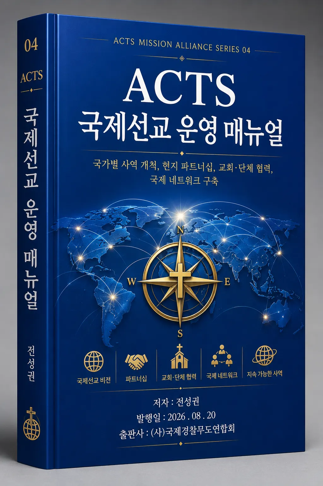
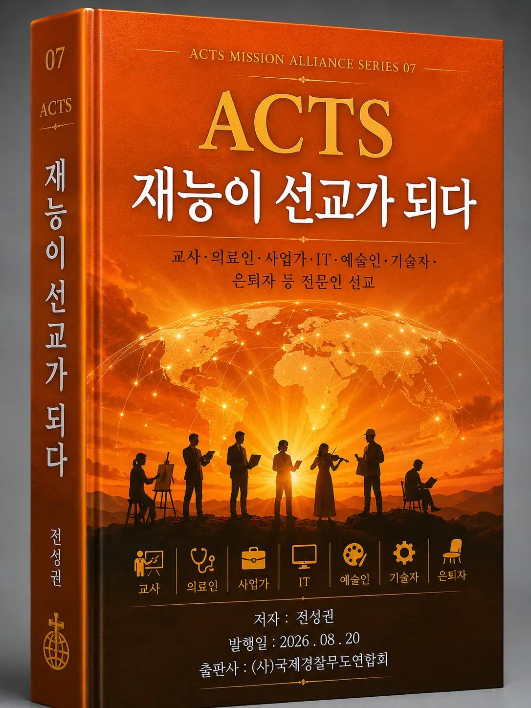
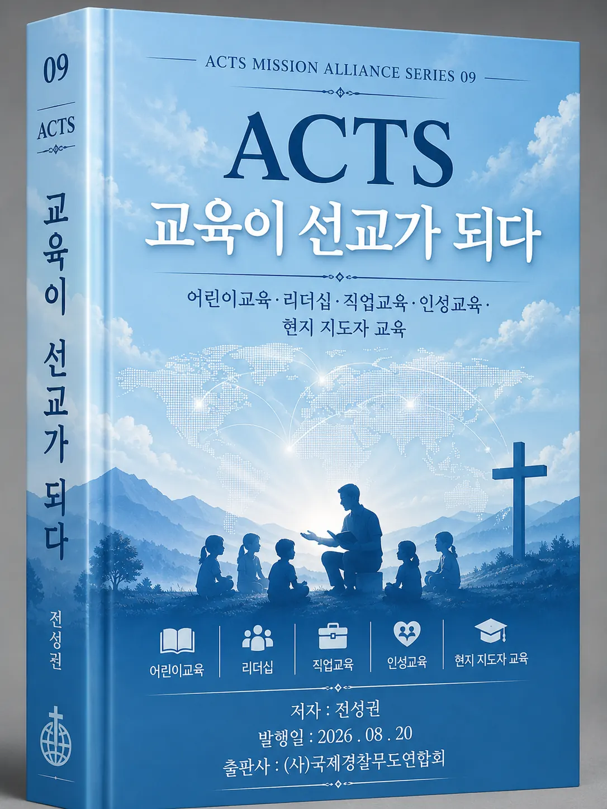
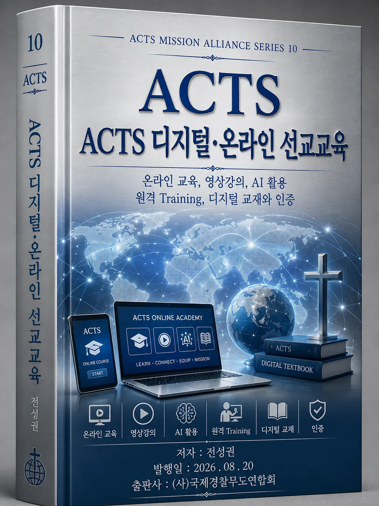
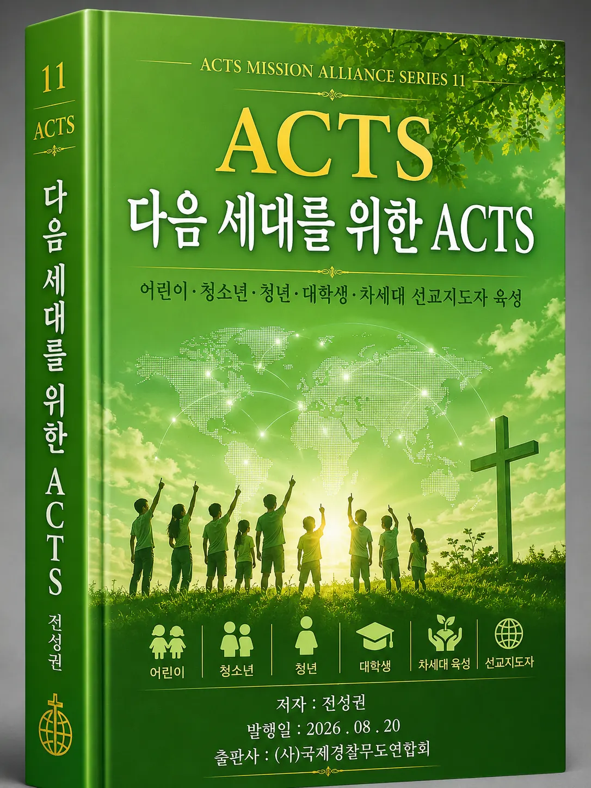
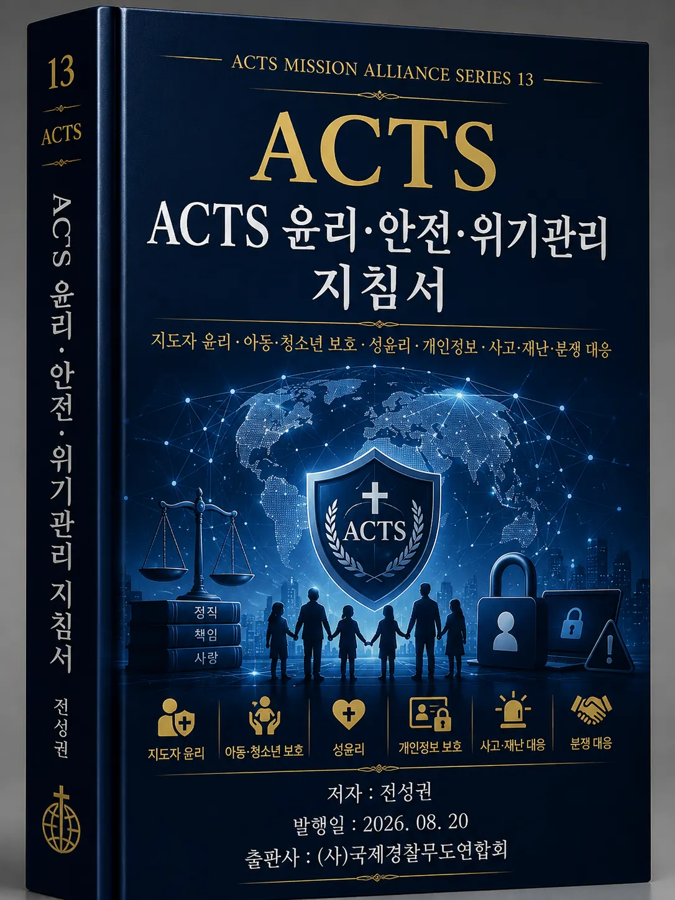
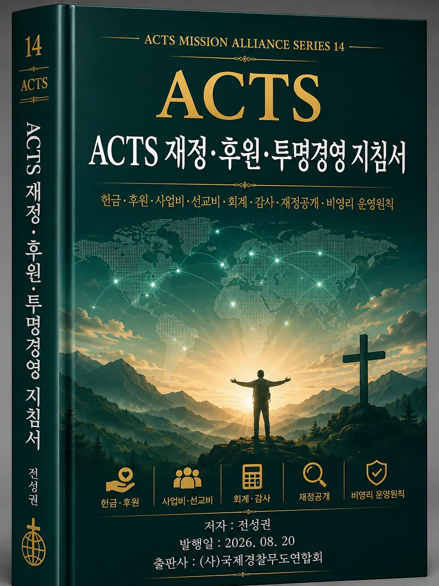
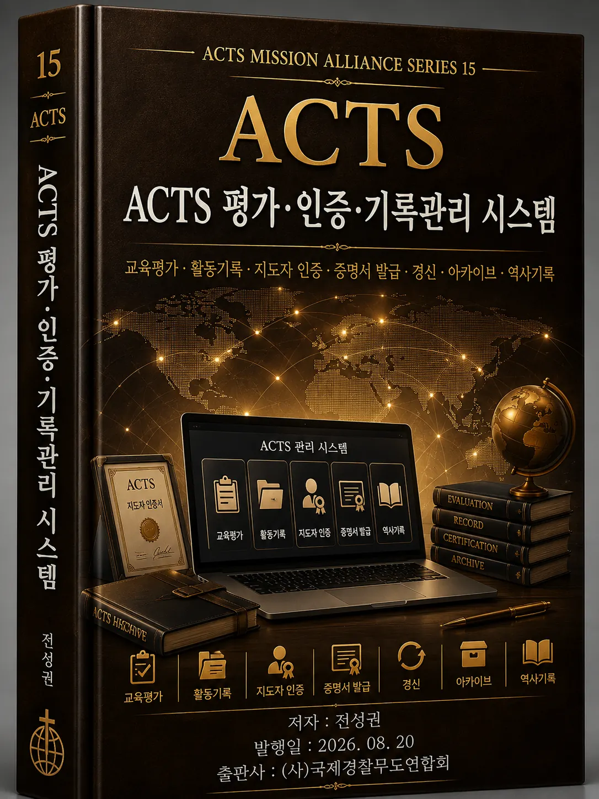
ACTS의 창립 철학에서 국제선교 운영, 지도자 훈련, 디지털 교육, 윤리·안전, 재정·후원, 평가·인증·기록관리까지 단계적으로 정리한 공식 교육·운영 교본입니다.
VERSION 4.2 · 2026.08







ACTS Mission Alliance의 정체성·창립정신·핵심가치와 15권 교본 체계를 한눈에 볼 수 있는 공식 자료입니다.
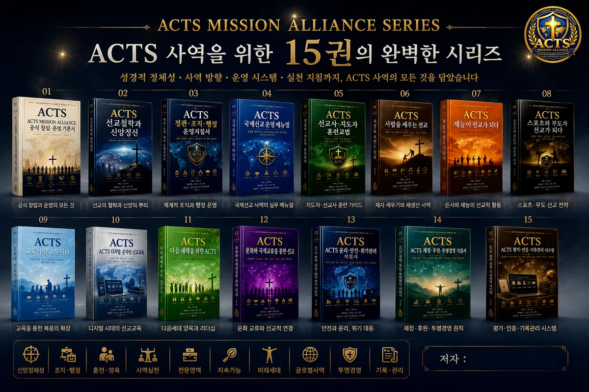
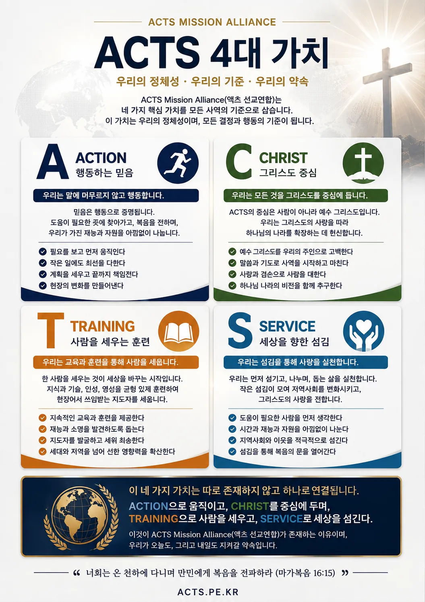
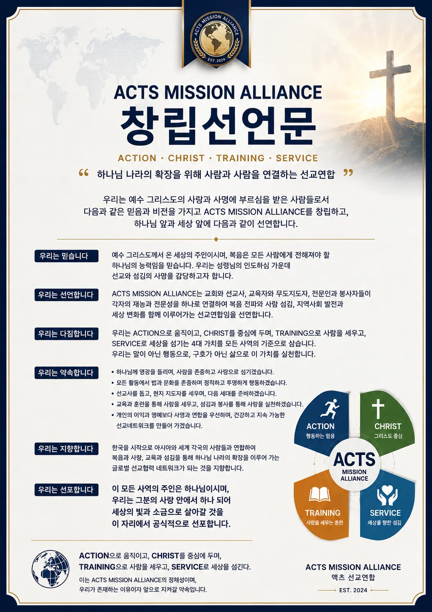